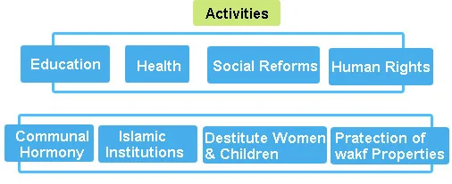

Countrywide network of branches, offices in all State capitals & metropolitan cities, more than 10 million members.
In order to streamline, unify and standardize its Halal certification procedure and operation all over India, Jamiat Ulama-i-Hind, the largest and the oldest Indian Muslims NGO, established Registered Trust named as Jamiat Ulama-i-Hind Halal Trust. It has a distinct & uniform Patented Halal logo, seal and standard certification format. It is accredited by JAKIM malaysia and its name appears on their website - www.halal.gov.my JUH has been certifying Halal food products including Food processing Industries, Non-food processing industries, abattoirs for long both for the domestic and overseas export markets across the globe. For e.g. Middle East, Malaysia, Africa and other Muslim countries. In fact it was the only Halal certification authority in India, acceptable to the importer clients, suppliers and the Muslim consumers at large due to its wide spread network, high reputation and religious credibility and integrity. Since the abattoirs and factories engaged in processing and export of food products are widely spread apart by thousands of miles from north to south and west to east Halal certification was carried out by its most conveniently located state and district units in Delhi, Mumbai, U.P. and Hyderabad under overall monitoring and control JUH central office in New Delhi. In order to make the industrialist capitalize best on Halal Certification Services, Jamiat Halal Trust implemented a patented logo replacing the certificates issued by various state and district units which used slightly varying logo, name, style spelling, seals and formats. Earlier it lead to apprehension that unscrupulous elements could exploit the loophole for self-aggrandizement. Therefore Jamiat Ulama-i-Hind, has now created a public charitable Trust.
Proper assessment is possible only in a situation where the clients have trust
that full confidentiality would
be maintained. JUHHT has made its auditors and staff legally bound to maintain clients confidentiality,
by making them sign an
instrument of Confidentiality and no Conflict of interest.
Before assigning audit duty, information about the auditor is provided
to the client, and the client is given opportunity to lodge any Objection against the audit team, if the
client apprehends any bias or
breach of trust, from the Auditors or Technical experts. Audit activity is initiated only after
receiving NOC from the client.
Jamiat Ulama-I-Hind Halal Trust earns its income through providing Halal Certification services and Training.
Being impartial is important, but being perceived to be impartial is as much important. This perception of impartiality is established by gathering objective evidence and making decision on the basis of these objective evidences. Impartiality is also ensured by disallowing involvement of any auditor or technical committee member in the process of audit and certification of any client with whom the officer has close relationship, familiarity or business interactions.
To look after matters related to Credibility and Impartiality of the Auditing and Certification process, a separate Committee for Safeguarding Impartiality has been established by the Chairman. To ensure impartiality in the structure and functioning of the committee, all members are selected from outside the Certification Body. These professionals represent different stakeholders, who have interest in impartial audit and certification process. Infringement in audit and certification process, if any, is noted and appropriate corrective and preventive action is taken. If JUHHT does not take satisfactory action the Impartiality committee is authorized to raise the issue before regulatory authorities. The Chairman sits in the committee meetings as a non- voting member to provide required information and to implement the decisions taken by the Impartiality Committee. The committee can be contacted at impartiality@jamiathalaltrust.org
Besides Public Charitable Activities JUHHT shall work to achieve following objectives specified in its Registered Trust deed:
Board of Trustee to promote healthy, Hygienic and clean food habits and prevent consumption of harmful substances, drugs, Alcohol, tobacco and adulteration in food items.
Promote Halal foods and other related product which do not contain ingredient containing Mashbooh (Doubtful)gelatin, enzymes, emulsifiers, stabilizer, sausages, fatty acids etc. since Halal means Lawful or permitted food. Also to promote healthy eating habits in general public to consume hygienic food items as per Personal Laws.
To issue certificate for Halal foods, animals products, ingredients and other related product after proper inspection, testing, analyzing and examination and the same may be acceptable in India and abroad.
To train individuals, who may be able to inspect the product as per norms laid down before issuing certificate by the Trust.
To promote export and consumption of Halal products throughout world.
To become the most preferred and reliable Halal certification body of India.
To provide required Halal audit, certification, and training services, by pooling subject experts, and by standardizing our service protocols in accordance with applicable global Halal standards.
JUHHT is committed to achieve our utmost satisfaction to those who rely on our certification by providing impartial auditing & certification services meeting requirements of, professional ethics, regulatory obligations, and relevant Halal standards.
JUHHT is committed to continually improve the effectiveness of its services by engaging and using personnel of high integrity & competence, and by providing to them frequent skill up gradation trainings.